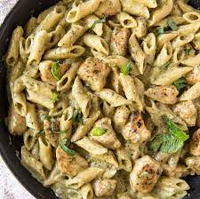

Chicken Pesto Pasta

Description
Chicken Pesto Pasta is full of flavorful chicken and tender pasta in a creamy, cheesy pesto sauce. It’s quick and easy, coming together in under 30 minutes.
Ingredients
- 8 ounces penne pasta
- 1 tablespoon olive oil
- 1 pound boneless chicken breast cut into bite size chunks
- 1 tablespoon italian seasoning
- 1 teaspoon salt
- 1 teaspoon ground black pepper
- 3/4 cup basil pesto
Steps
- Cook the pasta according to it’s package directions. Before draining the pasta, reserve 1/4 cup of the starchy cooking liquid.
- As the pasta cooks, heat the oil in a large skillet over medium-high heat for 2 minutes. Add the chicken, Italian seasoning, salt, and pepper. Stir well to coat the chicken. Cook for 6-8 minutes, until the chicken is cooked through, stirring occasionally. Remove the skillet from the heat.
- Add the cooked and drained pasta and the pesto to the skillet with the chicken. Stir well.
- To loosen up the sauce, add some of the reserved starchy cooking liquid, if needed.